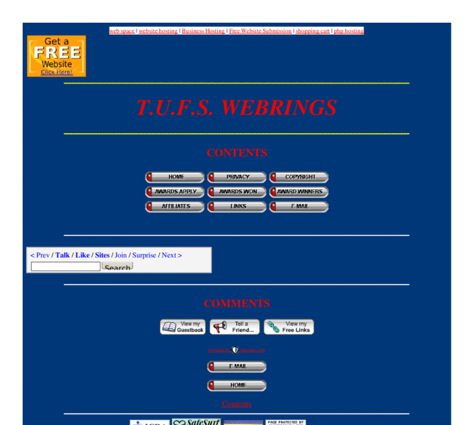

Previewing: The Useful Free Site Previewing: The Useful Free Site 
Use the left/right red arrow controls to navigate through this ring - Click the preview image to visit the member site.

Free Site providing useful and important net information, free recommended downloads, free sites, highly recommended sites and unusual sites generally
The Useful Free Site owned by:
 cyber7860 cyber7860
A member of the original webring since 12/26/2009.
|
|